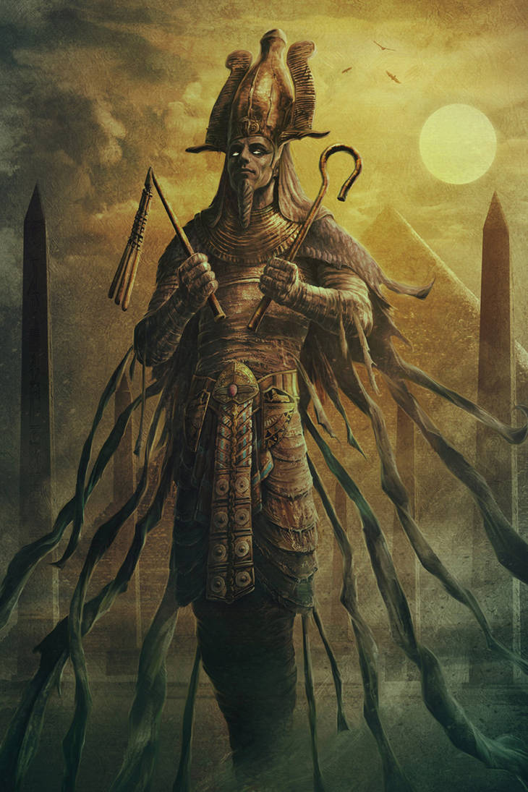

Osiris is the god of judgment, the afterlife, and vegetation, and is considered one of the most important and popular in Egyptian mythology. The cult of Osiris was very common and is recorded from 2400 B.C. onwards. For this reason, several temples were erected in his honor.
